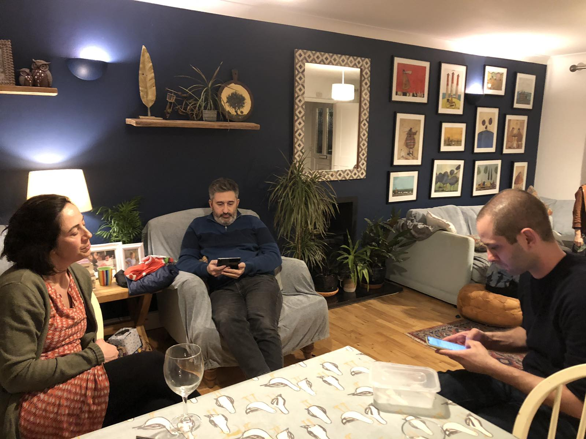
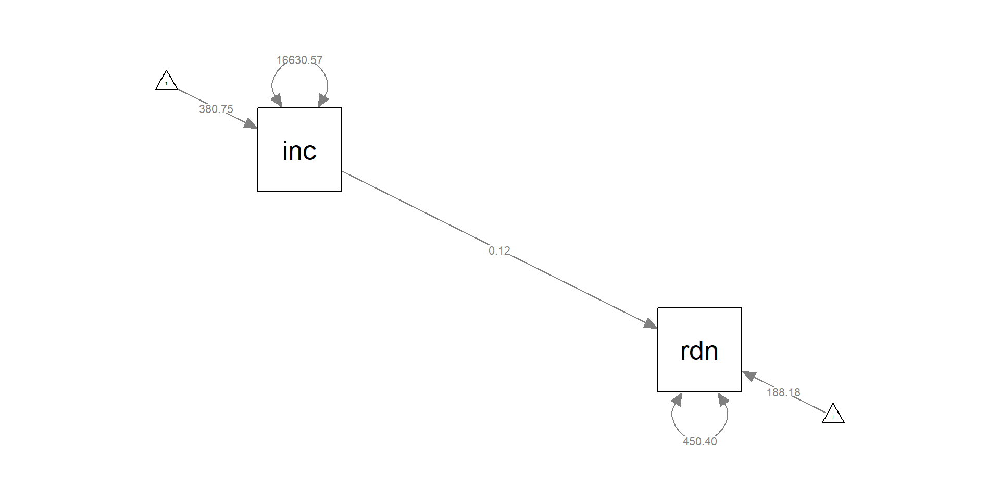
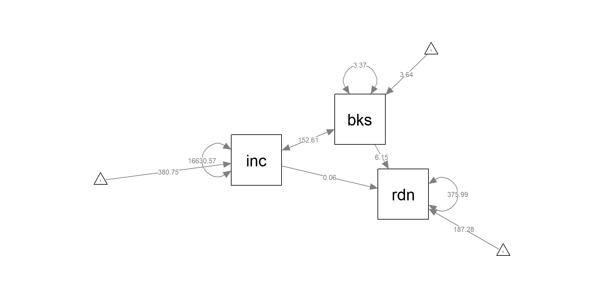
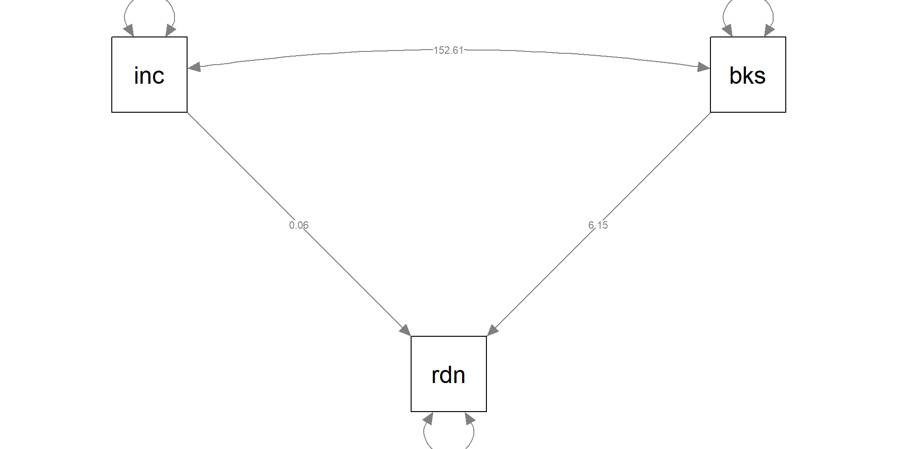
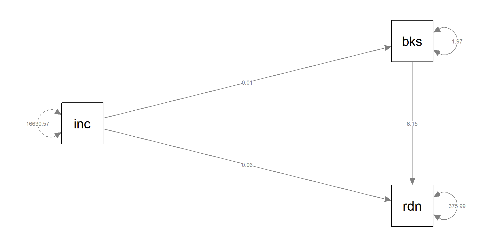

library(tidyverse)
library(lavaan)
df <- read_csv("random.csv")Who I am

- This is me (used to be)
- I love my two boys
- I also love computer games, motorbikes, music, food
- Funnily enough I love maths and statistics, and even more teaching these
- I am also dyslexic so please do tell me when you spot typing mistakes, usually whole words missing.
Who you are
I have no idea who you are but I hope by the end of this module you will love statistics a bit more and you will appreciate even more why they are paramount for Psychological research.
Today’s Aims in Terms of the Module
- Canvas
- Rstudio/Posit
- discord
- Assessment
- Quizzes (Badges to be confirmed)
- Github
Canvas
Hopefully you should know where to find our Canvas website, but just in case:
https://canvas.sussex.ac.uk/courses/26315/pages/module-home-page
RStudio/Posit Cloud
For our analysis we will be using exclusively R and mainly Posit Cloud. However, I strongly believe that as future scientists you should also have locally installed RStudio/Posit, have it up to date and use that for your everyday work. I would also advise you to attend our workshops bringing your own laptops/tablets/mobile phones.
You can join our Posit Cloud Workspace by following this link:
https://posit.cloud/spaces/469376/join?access_code=4YBUfhrNPGU2oWWw5Zym6bepaVV6izQ8O1KE6THK

Discord as our mean of day to day communication
We will be using discord as our main communication channel, please use it for any stats related questions. If you have any more sensitive questions please do not hesitate to email me at: L.Gonidis@Sussex.ac.uk
You can join us by following this link: https://discord.gg/9TV3xzMZ

Assessment
The module will be assessed exclusively by coursework. This will be in the form of three 1,000 words results sections. The deadlines are:
- Report 1, February 13th 16:00
- Report 2, March 14th 16:00
- Report 3, April 23rd 16:00
All submissions will be via Canvas submission points in the Assignments, Contributory E-Submission subsection. Each report topic will be released in our workshop the week prior to the submission deadline. Specifically, for Report 1 the topic will be Mediation/Moderation analysis using lavaan. You will receive detailed instructions on that next Monday.
Quizzes and Badges(hopefully)
Every week there will be a Canvas quiz provided so you can practice and enhance your understanding. These are absolutely non-compulsory but do spend some time trying to complete them. You will also be collecting points while you complete these (and other Canvas activities) and at the end of the module the two students with the highest scores will receive a surprise present.
Github
Github has been increasingly becoming a standard in the world of coding and statistical analysis as it can serve both as a repository and a host of websites related to projects. We will have a very brief demonstration today and we will return next week and start using it as a standard in our module.
Essential and Supplamentary Materials


Longitudinal Structural Equation Modeling: A comprehensive Introduction
Psychometrics in Exercises using R and Rstudio by Prof Anna Brown
Introduction to Structural Equation Modeling (SEM) in R with lavaan by Dr Johnny Lin
** And many other online resources that will be revealed in due time
Today’s Aims in Terms of Structural Equation Modeling (SEM)
- Introduce key terminology that we will be using this term
- Discuss examples of simple and multiple regression
- Revisit the same examples using lavaan
- Discuss baximum likelihood vs. least squares
Key Terminology
We will be using quite a few terms in our module so it is important to define them in advance and try to use them consistently. Most of the them are used as in the field but you could come across some slight variations in terminology. This should not put you off or scare you, as long as you understand the substance of each term. It is also a good idea to try to learn the visual equivalents of these terms
Key Terminology 2

- latent variable: a variable that is constructed/inferred indirectly by the data and does not exist in the data.
- observed variable: a variable that has been measured and exists in our data.
- exogenous variable: an independent variable that explains an endogenous variable. Can be either observed \((x)\) or latent \((ξ)\).
- endogenous variable: a dependent variable that has a causal path leading to it. Can be either observed \((y)\) or latent \((η)\).
- measurement model: a model that links observed variables with latent variables
Key Terminology 3
- indicator: an observed variable in a measurement model (can be exogenous or endogenous).
- factor: a latent variable defined by its indicators (can be exogenous or endogenous).
- loading: a path between an indicator and a factor.
- structural model: a model that specifies causal relationships among exogenous variables to endogenous variables (can be observed or latent).
- regression path: a path between exogenous and endogenous variables (can be observed or latent).
Are you ready for the first headache question?
So far, in linear regression we have learnt that \(x\) is an independent variable and \(y\) the dependent variable or outcome. However, in measurement models, the use of \(x\) or \(y\) depends on the type of factor we are referring to. If an indicator depends on an exogenous factor, the we refer to it as \(x\)-side. If an indicator depends on an endogenous factor then we refer to it as \(y\)-side.
Let us expand on this headache a bit more

Simple Regression
So far we have learnt that a simple regression is the linear relation between a predictor (or an independent variable, or an observed exogenous variable) and an outcome (or observed endogenous variable).
\[ y_1 = b_0 +b_1x_1 + ε_1 \]
where \(b_0\) is the intercept and \(b_1\) is the coefficient of \(x_1\) (observed predictor) and \(ε_1\) is the residual with \(y_1\) being the outcome.
Simple Regression cont.
I strongly recommend reading Kline chapter 2, pages 25-30 at minimum, Regression Fundamentals.
\[ \hat{Y} = B_XX + A_X \]
The above equation represents predicting Y from X
Also referred to as regressing Y on X, with \(\hat{Y}\) representing predicted scores, \(B_X\) unstandardised regression coefficient for predictor \(X\), also known as slope, and \(A_X\) is the intercept.
Generally, with linear models we would use ordinary least square (OLS) so that the least squares criterion is satisfied. In practice, we are trying to minimise the sum of squared residuals, \(\sum(Y-\hat{Y})\)
Let us see an example with data
We will work with the randomly generated data included in the random.csv
The datafile includes three variables:
reading: reading ability as assessed in school
income: weekly family income in £
books: number of books read in a month (on average)
We will create a simple regression model of reading regressing on income using lm()
Loading the datafile
Creating the model and getting model parameters
reading_lm <- lm(reading ~ income, data = df)
# the option below instructs R to give us the output in non-exponential notation
options(scipen=999)
summary(reading_lm)
Call:
lm(formula = reading ~ income, data = df)
Residuals:
Min 1Q Median 3Q Max
-50.590 -16.562 -0.178 13.429 48.207
Coefficients:
Estimate Std. Error t value Pr(>|t|)
(Intercept) 188.17787 6.68278 28.159 < 0.0000000000000002 ***
income 0.11800 0.01662 7.098 0.000000000201 ***
---
Signif. codes: 0 '***' 0.001 '**' 0.01 '*' 0.05 '.' 0.1 ' ' 1
Residual standard error: 21.44 on 98 degrees of freedom
Multiple R-squared: 0.3395, Adjusted R-squared: 0.3328
F-statistic: 50.38 on 1 and 98 DF, p-value: 0.0000000002013Looking at the output
Our intercept is 188.18 and our income coefficient is 0.118 (0.12). This means that the reading ability of a student with a family income of £0 will be 188.18 and for every £1 of family income increase the reading ability will increase by 0.12.
We also see residual standard error of 21.44
The square of that value is 459.67
Let us recreate the same model using Lavaan
# lavaan uses a simple language when specifying the model
#simple regression using lavaan
reading_lav <- '
# regressions
reading ~ 1 + income
# variance (optional)
income ~~ income
'
reading_lav_sem <- sem(reading_lav, data=df)
summary(reading_lav_sem)lavaan 0.6.17 ended normally after 11 iterations
Estimator ML
Optimization method NLMINB
Number of model parameters 5
Number of observations 100
Model Test User Model:
Test statistic 0.000
Degrees of freedom 0
Parameter Estimates:
Standard errors Standard
Information Expected
Information saturated (h1) model Structured
Regressions:
Estimate Std.Err z-value P(>|z|)
reading ~
income 0.118 0.016 7.170 0.000
Intercepts:
Estimate Std.Err z-value P(>|z|)
.reading 188.178 6.616 28.445 0.000
income 380.752 12.896 29.525 0.000
Variances:
Estimate Std.Err z-value P(>|z|)
income 16630.573 2351.918 7.071 0.000
.reading 450.401 63.696 7.071 0.000Comparing the two outputs
We observe that the estimates of the regression coefficients are the same despite lm() using least squares (LS) and lavaan using maximum likelihood (ML). However the variances are different with 459.67 for lm() and 450.40 for lavaan.
In we want to convert from LS variance to ML variance we can use the following formula
\[ \hat{σ}_{ML}^2 = \frac{(N-k)}{n}\hat{σ}_{LS}^2 \]
Where \(N\) and \(n\) are the sample sizes and \(k\) is the number or parameters to estimate, in this case \(k\)=2, one intercept and one regression coefficient
\[ \hat{σ}_{ML}^2 = \frac{(100-2)}{100}21.44^2=450.48 \]
Visualising with semPaths() from semPlot
library(semPlot)
semPaths(reading_lav_sem,
whatLabels = "est",
sizeMan = 10,
style = "ram",
layout = "circle")
OLS vs ML
Generally in SEM, we use the maximum likelihood estimator (MLE). In this module we will be using the acronyms ML and MLE to denote the maximum likelihood estimator method. This method estimates model parameters by maximising the likelihood function. In other words, maximising the probability of observing our existing data points given specific parameter values. We will be discussing in details what these parameters are in SEM (e.g., coefficients, latent variable variances, etc.). It should also be noted that MLE is not the only estimation methods, other methods can also be successfully implemented, such as generalised least squares. We decided on the appropriate estimator based on our data characteristics and assumptions.
Multiple regression, lm()
We can expand the previous example to now include a second predictor, books which represents the number of books read in a month (on average)
\[ y_1 = b_0 +b_1x_1 + b_2x_2 + ε_1 \]
You may also come across the following notation:
\[ \hat{Y} = B_XX + +B_WW + A_{X,W} \]
Important to note here that \(B_X\) and \(B_W\) are the unstandardized partial regression coefficients, \(A_{X,W}\) is the intercept. For more information please read Kline page 30.
Multiple regression, lm()
reading2_lm <- lm(reading ~ income + books, data = df)
summary(reading2_lm)
Call:
lm(formula = reading ~ income + books, data = df)
Residuals:
Min 1Q Median 3Q Max
-50.397 -13.633 0.547 13.698 51.585
Coefficients:
Estimate Std. Error t value Pr(>|t|)
(Intercept) 187.28030 6.14063 30.499 < 0.0000000000000002 ***
income 0.06160 0.01997 3.085 0.00265 **
books 6.14601 1.40272 4.382 0.0000298 ***
---
Signif. codes: 0 '***' 0.001 '**' 0.01 '*' 0.05 '.' 0.1 ' ' 1
Residual standard error: 19.69 on 97 degrees of freedom
Multiple R-squared: 0.4487, Adjusted R-squared: 0.4373
F-statistic: 39.47 on 2 and 97 DF, p-value: 0.0000000000002875Multiple regression, lavaan
reading2_lav <- '
# regressions
reading ~ 1 + income + books
# covariance
income ~~ books
'
reading2_lav_sem <- sem(reading2_lav, data=df)
summary(reading2_lav_sem)lavaan 0.6.17 ended normally after 38 iterations
Estimator ML
Optimization method NLMINB
Number of model parameters 9
Number of observations 100
Model Test User Model:
Test statistic 0.000
Degrees of freedom 0
Parameter Estimates:
Standard errors Standard
Information Expected
Information saturated (h1) model Structured
Regressions:
Estimate Std.Err z-value P(>|z|)
reading ~
income 0.062 0.020 3.132 0.002
books 6.146 1.382 4.449 0.000
Covariances:
Estimate Std.Err z-value P(>|z|)
income ~~
books 152.610 28.168 5.418 0.000
Intercepts:
Estimate Std.Err z-value P(>|z|)
.reading 187.280 6.048 30.967 0.000
income 380.752 12.896 29.525 0.000
books 3.640 0.184 19.827 0.000
Variances:
Estimate Std.Err z-value P(>|z|)
.reading 375.988 53.173 7.071 0.000
income 16630.574 2351.918 7.071 0.000
books 3.370 0.477 7.071 0.000Visualising with semPaths() from semPlot
semPaths(reading2_lav_sem,
whatLabels = "est",
sizeMan = 10,
style = "ram",
layout = "spring")
Visualising with semPaths() from semPlot
semPaths(reading2_lav_sem,
whatLabels = "est",
sizeMan = 10,
style = "ram",
layout = "tree",
intercepts = FALSE)
A prelude to next week. Mediation with Lavaan
We will explore whether the number of books read actually mediate the effect of income on reading ability. We will not go in depth today as we will discuss this topic next week in detail. We will just demonstrate how the code would change in lavaan.
reading_med_model <- ' # direct effect
reading ~ c*income
# mediator
books ~ a*income
reading ~ b*books
# indirect effect (a*b)
ab := a*b
# total effect
total := c + (a*b)
'
reading_med <- sem(reading_med_model, data = df)
summary(reading_med )lavaan 0.6.17 ended normally after 1 iteration
Estimator ML
Optimization method NLMINB
Number of model parameters 5
Number of observations 100
Model Test User Model:
Test statistic 0.000
Degrees of freedom 0
Parameter Estimates:
Standard errors Standard
Information Expected
Information saturated (h1) model Structured
Regressions:
Estimate Std.Err z-value P(>|z|)
reading ~
income (c) 0.062 0.020 3.132 0.002
books ~
income (a) 0.009 0.001 8.431 0.000
reading ~
books (b) 6.146 1.382 4.449 0.000
Variances:
Estimate Std.Err z-value P(>|z|)
.reading 375.988 53.173 7.071 0.000
.books 1.970 0.279 7.071 0.000
Defined Parameters:
Estimate Std.Err z-value P(>|z|)
ab 0.056 0.014 3.935 0.000
total 0.118 0.016 7.170 0.000Let us visualise the above model
semPaths(reading_med,
whatLabels = "est",
sizeMan = 10,
style = "ram",
layout = "tree",
intercepts = FALSE,
rotation = 2)
To conclude
Hopefully, this was a gentle introduction to the module and lavaan. We will be following a more formal approach in the coming weeks. In the meantime do spend some time this week to do the suggested reading and practice with R and lavaan in our Posit Cloud Workspace.